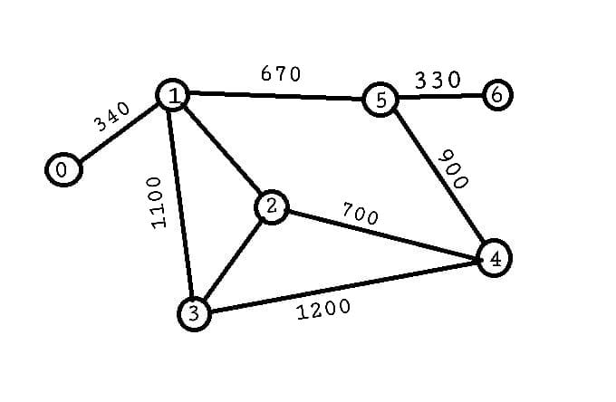

SDG: 11
Target: 11.5, 11.b
Indicator: 11.5.1, 11.b.2
Unmanned machines like drones are crucial for delivering essential goods such as food and medicine and for providing real-time data during emergencies. They assist rescue teams by helping optimize the flow of supplies and access critical information during disaster events.
1. Binary search Trees: Manage and organize supply routes efficiently, ensuring that no places are left unvisited. They allow efficient tracking and organization of available supplies.
2. Kruskal’s Algorithm: Used for managing connected areas during disasters. It ensures drones can deliver supplies where necessary, efficiently grouping reachable regions to prevent redundant operations.
Efficiency: O(|E| log|E|) for sorting edges and connecting components.
3. Queues: These ensure the machines are sent out based on priority levels, such as proximity or urgency.
4. DFS: Used in exploring all possible routes through disaster areas to identify the most critical places to provide immediate aid.
Click to view related text files:
